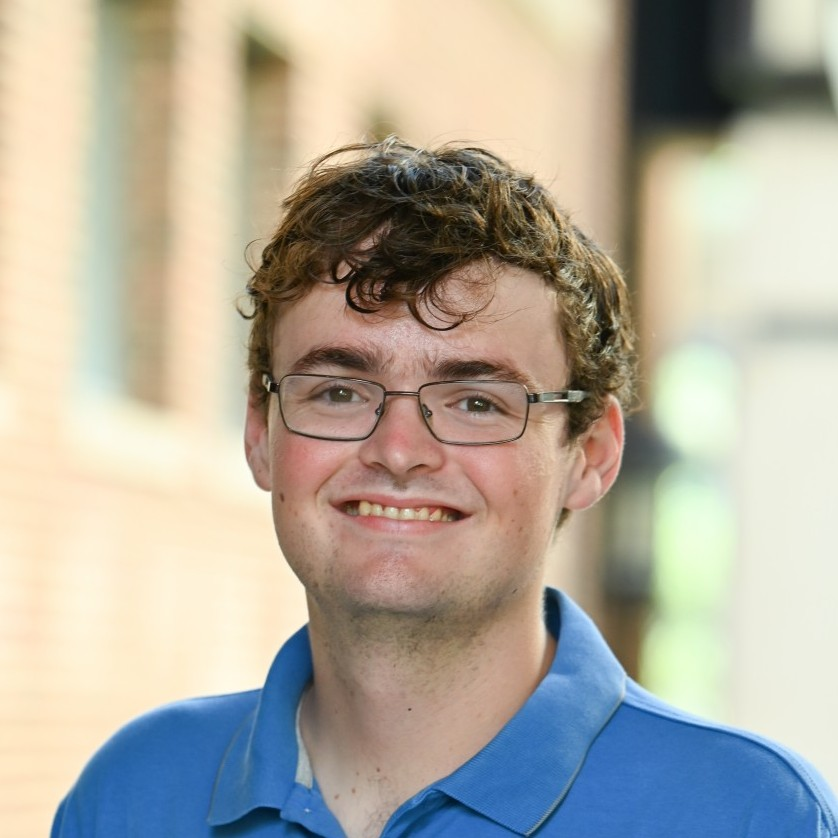

About Me
I am a third year PhD candidate at the University of Minnesota, interested in algebraic combinatorics and commutative algebra. My advisor is Pasha Pylyavskyy.
I graduated from San Diego State University in 2021, where I worked with Christopher O'Neill on problems relating to numerical semigroups and polyhedral geometry.
Recent Activities
- (Fall 2024) I passed my preliminary oral exam, with a presentation titled "The Stanley-Stembridge Conjecture for 2+1+1 avoiding unit interval orders".
- (Fall 2024) I am organizing the Directed Reading Program at UMN with Aaron Li, Anastasia Nathanson, and Anthony Nguyen.
- (Summer 2024) I was a TA for the UMN Combinatorics REU.
- (Summer 2024) I participated in MRWAC at UMN, where I worked on a project investigating coefficients of Kazhdan-Lusztig polynomials.
- (Fall 2023, Spring 2024) I organized Student Combinatorics and Algebra Seminar with Miranda Moore and Sylvester Zhang.
- (Summer 2023) I participated in the Macaulay 2 Workshop at UMN, where I contributed to the Matrix Schubert Varieties package mentored by Ayah Almousa and Patricia Klein (preprint now available!).
Contact
Email: mcdo1248 [at] umn [dot] edu
Office: 424 Vincent Hall 206 Church St SE Minneapolis MN 55455